人类的时代都以材料命名：石器、青铜、铁器，今天是硅。AI 芯片里的硅、铜、镓、锗、稀土，同样都来自矿。这一轮的每个标志，都是一个人人认得的“古老的矿”，加上一个人人认得的“AI 符号”：简洁大气，一眼就懂。
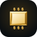
Ingot · Chip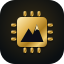
Mountain · Die俯视的一块金锭，四边斜面清晰可见；两侧伸出芯片引脚，金锭就成了一枚芯片。金锭是几千年来人类冶炼和财富的象征，芯片是 AI 的心脏：从矿到智能，一眼就懂。
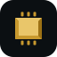
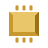
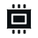
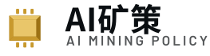
一枚芯片，芯片中央是一座金色的山。山代表矿藏与大地，芯片代表算力与 AI：AI 的根基就在山里的矿。图形方正大气，远看是芯片，近看是群山。
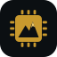
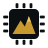
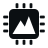
人类第一件工具是打制的石器手斧，距今约一百七十万年，比任何文字都早；石面上长出一条带节点的线路，像神经网络的枝杈。从石头到智能，概括了人类的整部历史。
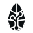
底部是起伏的地层，代表亿万年形成的矿藏和人类的过去；往上，地层变成一格格像素，阶梯式升起，代表数据与 AI 的未来。底下是大地，上面是数字世界。